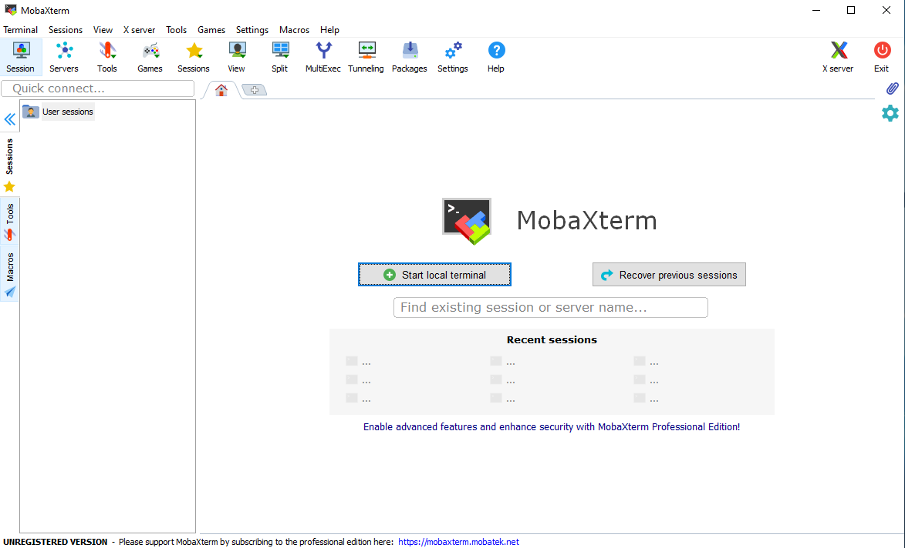
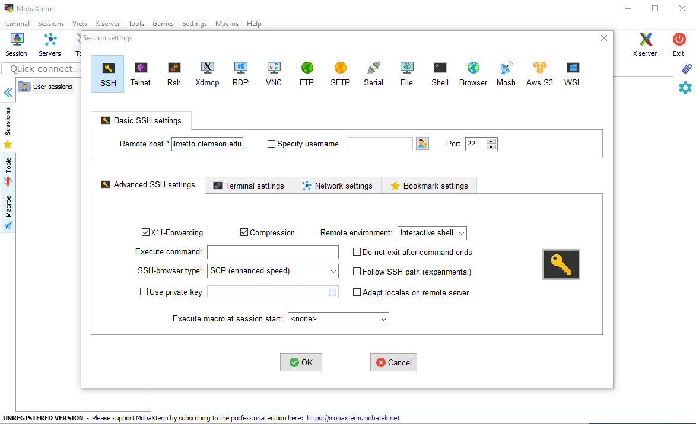
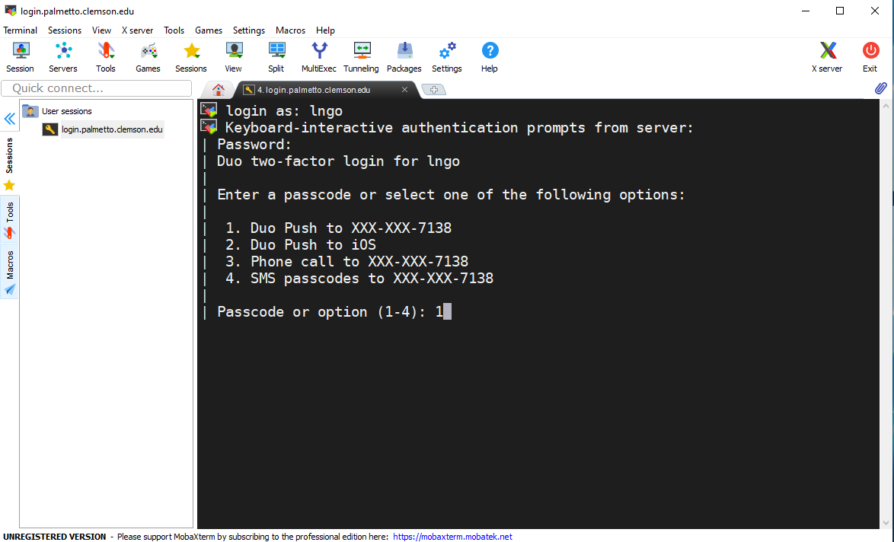
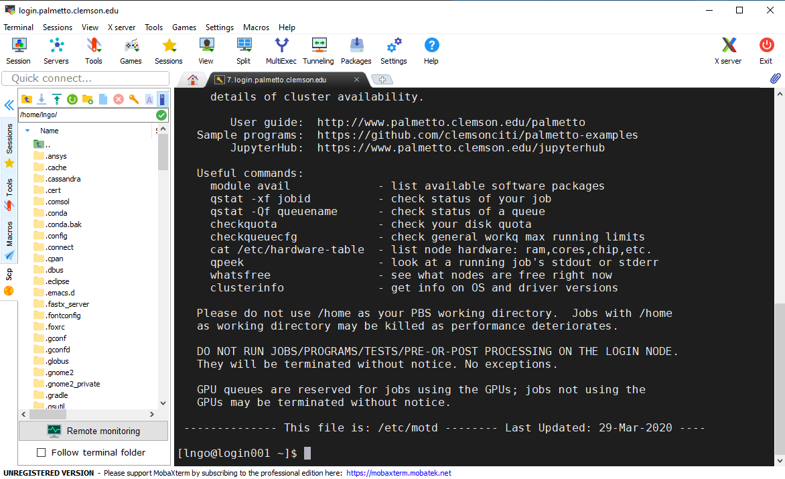

Logging in
Any user with a Palmetto Cluster account can log-in using SSH (Secure Shell). Mac OS X and Linux systems come with an SSH client installed, while Windows users will need to download one.
Mac OS X and Linux users
Mac OS X or Linux users may open a Terminal, and type in the following command:
$ ssh username@login.palmetto.clemson.edu
where username is your Clemson user ID.
You will be prompted for both your password and DUO authentication.
Windows
MobaXterm is the recommended SSH client for Windows and can be downloaded from MobaXterm's download page. This software is recommended because it is free and comes with:
- A built-in file transfer client, which allows you to exchange files and folders between your own computer and Palmetto in a convenient manner.
- An X11 server which allows you to run graphical programs on Palmetto cluster
- A graphical port-forwarding interface to support easy access to web-based programs launched inside Palmetto
If you select the installation version of MobaXterm, you will need to unzip the downloaded file before running the installation program. Windows sometimes allow users to run the installation from inside the zipped file, resulting in missing an additional utility file (still inside the zipped file).
After downloading and installing MobaXterm, users can log-in by following these steps:
-
Launch the MobaXterm program

-
On the top-left corner of MobaXterm, click the Session button. Confirm that the following settings are set for Basic SSH settings and Advanced SSH settings:
Parameter Value Remote host login.palmetto.clemson.eduPort 22 X11-Forwarding enabled Compression enabled Remote environment Interactive shell SSH-browser type SCP (enhanced speed) 
-
Click OK and a new session window will be opened, where you will be prompted for your Palmetto password and the DUO authentication.

-
After being authenticated, you will login to the login001 node.

All settings for this session are saved, and for future logins, you can select this session from the Recent sessions form of the main MobaXterm window as well as the Saved sessions tab of the side window. The side window can be displayed or hidden by clicking on the blue double-arrow sign on the top left of MobaXterm.
MobaXterm also comes with a built-in file browser and transfer GUI (SSH-browser). This GUI is accessible via the SCP tab of the side window. Using the Upload (green arrow pointing up) and and Download (blue arrow pointing down) buttons at the top of the SCP tab, you can easily transfer files between Palmetto and your local computer.
Two-Factor Authentication (2FA)
All connections to Palmetto require 2FA. If you are not enrolled in 2FA yet, you may enroll using the link https://2fa.clemson.edu/.
After you enter your login name and password, Palmetto will ask you to provide additional authentication for 2FA via one of the following three options for registerd devices (smart phone or tablet):
Using keyboard-interactive authentication.
Duo two-factor login for $user
Enter a passcode or select one of the following options:
1. Duo Push to XXX-XXX-XXXX
2. Phone call to XXX-XXX-XXXX
3. SMS passcodes to XXX-XXX-XXXX
Passcode or option (1-3):
- Option 1: response to Duo Push to your device by clicking Approve
- Option 2: listen to the automatic call from system and select any key on your device.
- Option 3: enter a passcode that is shown in your DUO app.
Passcode or option (1-3): 1234567
More information can be found at here